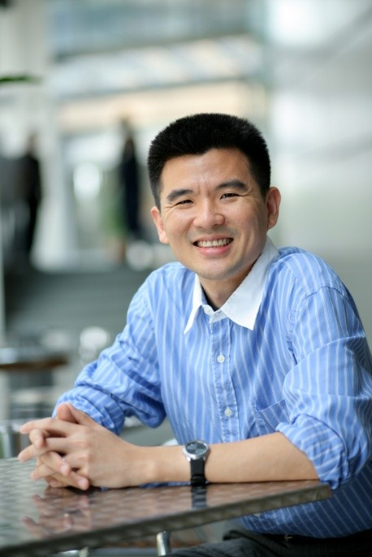
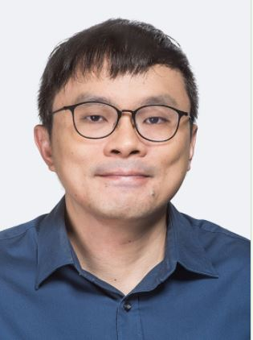
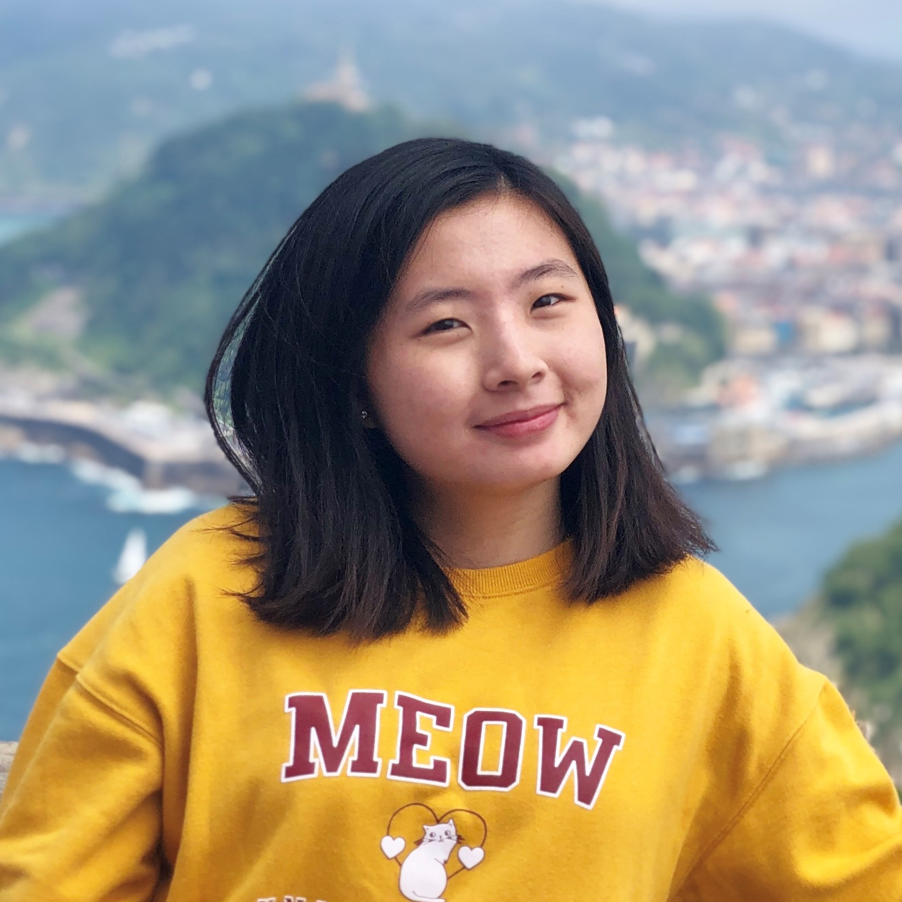
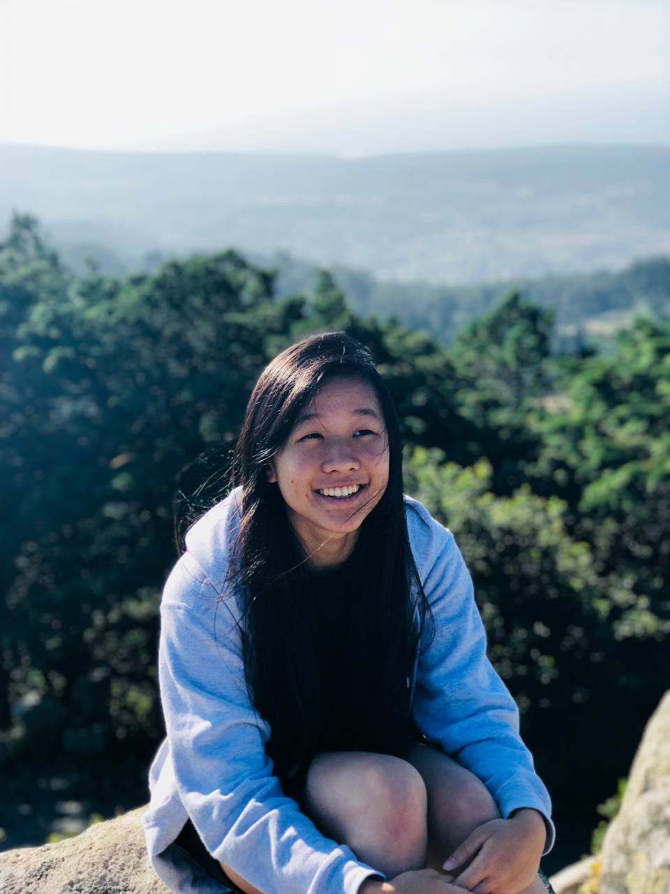
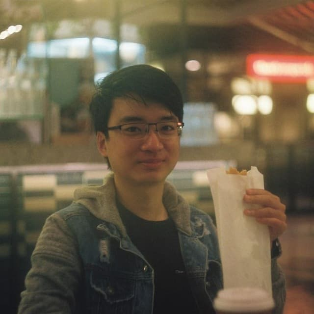

ESD

Prof Lynette Cheah
At SUTD, Assoc. Prof. Lynette teaches the Urban Transportation technical elective and supervises Capstone projects. Her research concerns sustainable cities and urban mobility. She likes to go on walks or bicycle rides with her family.

Prof Douglas Streeter
He teaches finance in ESD and have been at SUTD for three years. Before, he taught at Nanyang Business School as well as business schools in Hong Kong and the US. I am a self-identified “finance geek”, and always enjoy conversations about fintech, investing and start-ups, blockchain and decentralized finance. He loves travelling and have lived in Indonesia (Bali), Japan, Switzerland, Italy, Germany and Mexico.He also like playing chess.

Safa
Safa graduated from ESD in Aug 2020, majoring in Business Analytics & Operations Research. While at SUTD, he organised concerts as president of SUTD Bands, managed school communications as publicity director for ROOT, and eventually worked on a student-initiated Capstone project, building an AI platform for cancer researchers with a local startup.Since graduating, he’s undergone a few rotations as part of a management associate programme at FWD - previously in project management, then data analytics, and now the strategy function. Outside of work, he volunteers in youth mentorship programmes.
CSD

Prof Tony Quek
Tony Q.S. Quek received the B.E. and M.E. degrees in Electrical and Electronics Engineering from Tokyo Institute of Technology, Tokyo, Japan, respectively. At Massachusetts Institute of Technology (MIT), Cambridge, MA, he earned the Ph.D. in Electrical Engineering and Computer Science.
Currently, he is the Cheng Tsang Man Chair Professor with Singapore University of Technology and Design (SUTD). He also serves as the Head of ISTD Pillar, the Director of Future Communications Programme, and the Deputy Director of SUTD-ZJU IDEA. His current research topics include wireless communications and networking, big data processing, network intelligence, URLLC, and IoT.
Dr. Quek has been actively involved in organizing and chairing and has served as a TPC member in numerous international conferences.

Prof Norman Lee
Norman currently teaches programming at SUTD, teaching mainly first-year programming courses in Python and Java.
Prior to joining SUTD, he spent the past nine years teaching in the local polytechnic sector. In that time, he taught mainly mathematics and physics but also had opportunities to teach C++ programming, introductory data mining, and mechanics of materials.
His current research interest is in learning analytics, especially in investigating the insights that can be gained by applying data-mining techniques to student data. He is also interested in the various issues related to teaching and learning in higher education, including but not limited to assessment practices and learning design.
When he is not at work, he enjoys classical music, sings with a choir, and loves traveling.

Katherine Fennedy
Katherine has spent 8 years in SUTD between 2013 and 2021, 3.5 years as an undergraduate in ISTD and 4.5 years as a PhD candidate in the field of Human-Computer Interaction.She is now a Research Fellow in NUS. Besides academic activities, she has learned how to collaboratively design communities that support the needs and interests of individuals in SUTD.From being a House Guardian (representing hostel residents) to building PADI (Indonesian Cultural Club) and to supporting GSA (Graduate Students Association), these roles have allowed Katherine to find meaning in improving the lives of others.She has more stories to share on why and how you could make your SUTD journey a rewarding and memorable one for yourself and others around you.

Faith See
From prancing at orientation as a pixie house head, to lighting the stage. From planning hackathons, to organizing concerts for people my age.From designing for ROOT, to leading various Fifth Row groups. From interning overseas, to scoring a government scholarship. From juggling full-time school and work, to living life as mental health issues lurk. Surviving SUTD, from me to you. (If you need something more proper, I’m an ISTD CyberSec graduate from class of 2020 working in DBS CyberSec.)

Chester
He is a ISTD PhD student starting this Sept where he had just graduated from ISTD recently! His specialisation is in Computer Networks & Cloud Computing. He has been very involved in fifth rows such as NihonGo (the Japanese Cultural Club) and 3DC (Digital Design and Development) and helping out in SUTD events such as Virtual Open House.
He strongly believes that SUTD is a place where you learn best by doing crazy things, not mugging. If you are like him and have a tendency to do wild, come talk to him where he can share his craziest experiences in SUTD!
EPD

Seow Chun Yong
Chun Yong graduated from SUTD in 2015 at the top of his cohort in EPD (Alternative Energy). He went on to pursue a Masters in Nuclear Engineering and Radiological Sciences at the University of Michigan in 2016, and has also just completed his Masters of Science in Security by Design at SUTD this year. Chun Yong works in cybersecurity as an offensive security professional, and has interests in hacking, data analytics, and reverse engineering. Chun Yong has given talks at seminars and conferences on the topics of car hacking and threat hunting. He is also interested in music, sketching, and philosophy.

Marcel
He was in the EPD pillar, studying the mechanical engineering track. His capstone project was on a robot that draws on a very large wall (3x5 meter) ! It was designed from scratch with his team and manufactured almost from scratch with heavy use of 3D printed components! If you are interested in programming, game development or Unity as well, keep reading!
He has had opportunities playing around with Unity 3D Engine in the C# language, working on a Virtual Reality (VR) digital recreation of SWaT, the water treatment facility at iTrust Centre (SUTD) for part-time work. It displays live data from the water facility and shows critical indicators in the physical representation in the game, real time. He also did a couple of other Unity projects for 3.007 (Design), 30.007 (Engineering Design Innovation) to recreate a playable robot animation in Unity, and also some others including internship with SUTD Game Lab using Unity.
He has also been involved in SUTD Christian Fellowship and SUTD Drama, performing as a main actor for a 2019 performance of All My Sons (Arthur Miller)
DAI

Dr Edwin Koh
Have been teaching design process and methodologies for 10 years.Research focuses on managing design complexity and enhancing creativity. Bronze Medallist (Black Belt) for the 21st Singapore National Taekwondo Championship.

Prof Wang Yixiao
Just finished his PhD degree at Cornell University in Dec. 2020, He started his position in SUTD about 5 months ago.He has involved himself with research & development projects of architectural robotics, wearable robotics, and human-robot interaction.He believes that one day, our surrounding built environment (e.g., our home, nursing home, office, public space, etc.) can be not only physically, but socially interactive and assistive as if our friends, partners, companions, etc.This professor will teach “machine learning” and “interaction design for cyber-physical artifacts” (a new elective) in 2022 summer and spring. He also likes playing piano in his free time.
SMT

Prof Ricky Ang
Being trained as a physicist and nuclear engineer in U of Michigan, he worked in Los Alamos National Laboratory before coming back to Singapore (NTU) in Sept 2001.In November 2011, he joined SUTD to help setting the PhD programme, and with strong passion to embrace SUTD’s interdisciplinary education. He is now the Head of Science, Mathematics and Technology (SMT) cluster and hopes to promote STEM education for future user-inspired basic research, which is important for the future economy of Singapore.

Prof Chee Huei
Chee Huei is a senior lecturer from SMT clutter. He has been teaching at SUTD for more than 9 years. As a Physics graduate by training, he is currently teaching Freshmore Term 1 Physical World, Term 2 Technological World, Term 3 Designing Energy System and EPD Term 4 Circuit & Electronics. He is always learning to appreciate the beauty of nature through physics, and keen to share the excitement with students. He is passionate in pedagogical research and projects to improve teaching and learning. He has also involved himself with interesting projects, such as electronics and IoT for smart home applications. He likes reading in his free time.

Prof Xiaogang
Dr. Liu Xiaogang is an Assistant Professor at the Singapore University of Technology and Design (SUTD). He obtained his Ph.D. degree from the University of Cambridge in 2014. He began his independent research with Singapore-MIT Alliance for Research and Technology (SMART) as a SMART Scholar (2014—2016). After joining SUTD in 2017, he led the Fluorescence Research Group to conduct research on the structure-property relationships of organic dyes, as well as develop high-performance fluorescent products for a wide range of applications (i.e., fluorescence imaging and sensing). He teaches mathematics at SUTD and enjoys interactions with students.

Prof Xiaojuan Khoo
Before joining SUTD as a teaching faculty in Science, Math, and Technology, Xiaojuan spent over 10 years in the United States pursuing undergraduate and postgraduate training in the area of biomedical engineering. Currently, Xiaojuan works closely with SUTD faculty and healthcare industry partners to develop an innovative healthcare engineering curriculum and supports several UROPS in the areas of medical 3D printing and bioprinting.In her free time, you can find Xiaojuan exploring campus with her two young kids, or practicing her moves with the SUTD ballroom dance club!
HASS

Prof Sandeep
His primary area is Southeast Asian history and visual studies. He has related interests in non-fiction film; the novel; memoirs; newsreels and old media. He welcome students keen on exploring histories, ethnographies, and visual representations of Asia. This is his fifth year at SUTD.

Prof Andrew Yee
He is currently a Faculty Early Career Award Fellow at the Singapore University of Technology and Design.His research focuses on understanding how social and technological environments shape the health and well-being of individuals. He’s currently working on several research projects related to media use among children and youths and how it affects their well-being, parent-child communication, and dietary preferences among children, as well as technological affordances for health.